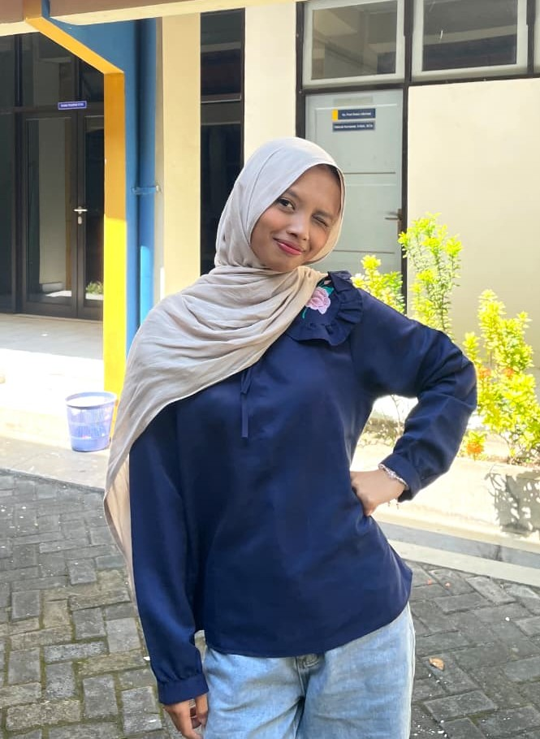
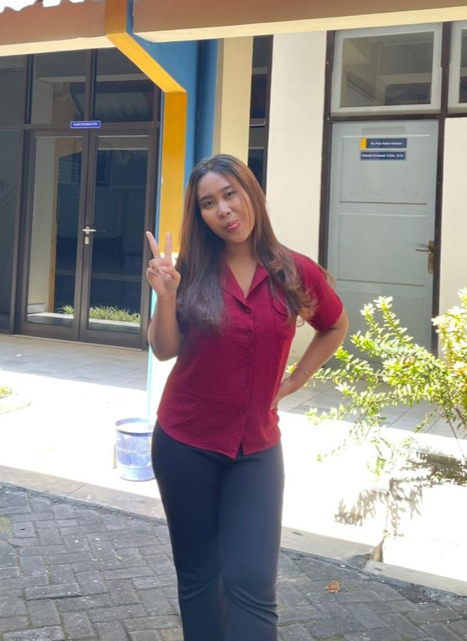
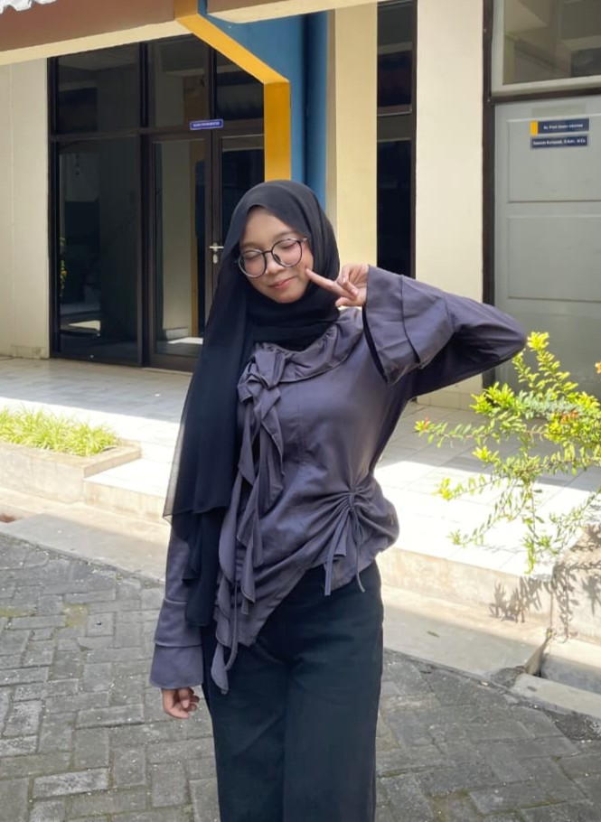
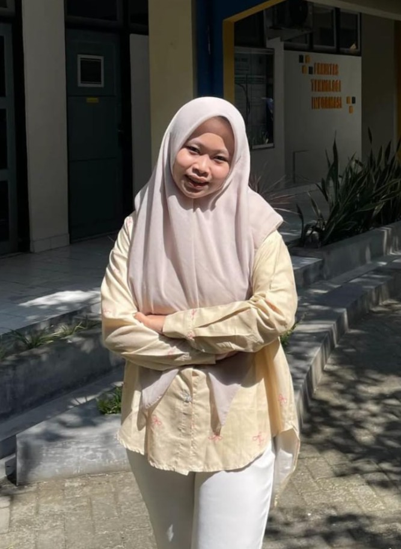
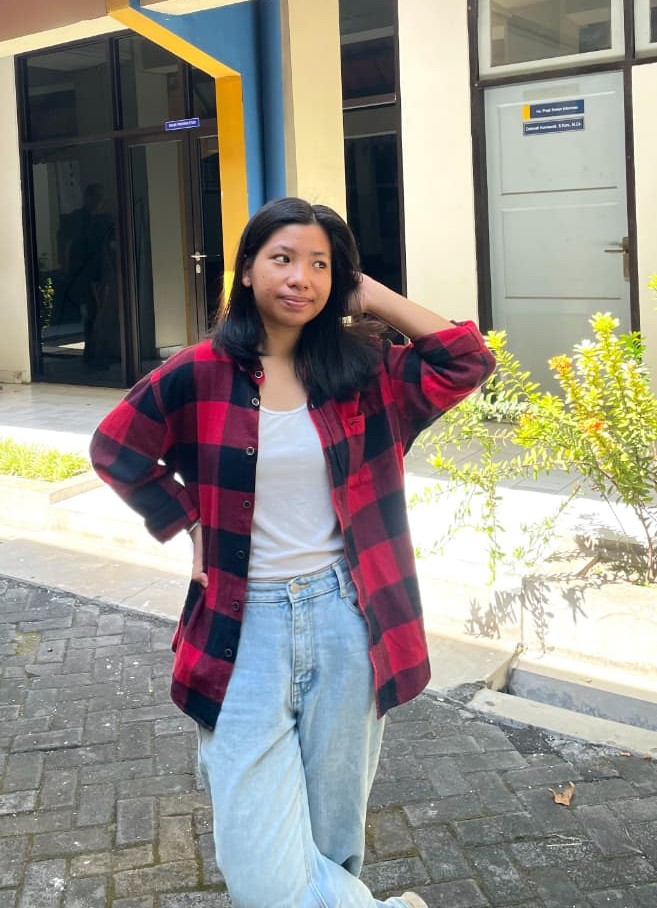

Kampus IT pertama di Jogja yang siap mengubah kreativitas dan logikamu menjadi karir global terbaik di era industri digital.
Daftar SekarangBerpengalaman puluhan tahun mencetak ribuan profesional unggul di bidang teknologi informasi.
Mengintegrasikan Artificial Intelligence, Big Data, Coding Intensif, dan Bisnis Digital.
Laboratorium komputer modern, co-working space, dan lingkungan inovasi mahasiswa.
Fakultas Teknologi Informasi (FTI) UTDI berfokus pada penguasaan teknologi terapan, rekayasa perangkat lunak canggih, dan pertahanan siber. Kurikulum kami divalidasi langsung oleh asosiasi industri.
Menguasai AI, Cloud Computing, Machine Learning, Backend dan Frontend Development.
Data Analytics, Enterprise Architecture, Business Intelligence dan Tata Kelola IT.
Cybersecurity, Jaringan Komputer, Internet of Things (IoT) dan Embedded System.
Melahirkan pemimpin bisnis modern, pengusaha digital mandiri, dan ahli strategi ritel masa kini berbasis data teknologi tingkat tinggi.

"Satu hal yang paling aku syukuri kuliah di UTDI itu lingkungannya. Di sini aku ketemu temen-temen sefrekuensi yang seru diajak kolaborasi dan selalu saling dukung buat nyoba hal-hal baru. Kampus ini bener-bener jadi wadah yang tepat buat kita yang pengen berkembang dan melek teknologi. Serius, kamu harus ngerasain sendiri keseruannya, yuk buruan daftar dan jadi bagian dari UTDI!"

"Ngerasa beruntung banget kuliah di UTDI karena dosen-dosennya nggak cuma sekadar ngajar, tapi bisa jadi mentor diskusi yang asik banget. Mereka selalu dukung inovasi dan kreativitas apa pun yang pengen kita coba."

"Selama kuliah di UTDI, aku ngerasa soft skill dan hard skill-ku bener-bener diasah seimbang. Kampus ini tahu banget apa yang dibutuhin sama industri kerja sekarang, jadi pas lulus nanti ngerasa lebih percaya diri!"

"Aku suka banget sama vibes kampus UTDI. Di sini kita nggak cuma dicekokin teori, tapi bener-bener ditantang buat langsung praktik. Kuliahnya asik, tugas-tugasnya pun menantang tapi bikin kita makin berkembang."

"Kuliah di UTDI itu paket lengkap. Ilmunya dapet, relasinya luas, dan prospek kerjanya jelas banget karena kita dididik buat siap kerja di era transformasi digital ini."
Bebas SPP Tetap & Variabel 100% Hingga Lulus.
Beasiswa penuh berupa pembebasan biaya SPA dan SPP hingga lulus sesuai ketentuan yang berlaku.
Penerimaan Mahasiswa Baru Tahun Akademik 2026/2027 telah resmi dibuka. Hubungi admin pendaftaran kami hari ini.
Daftar Sekarang